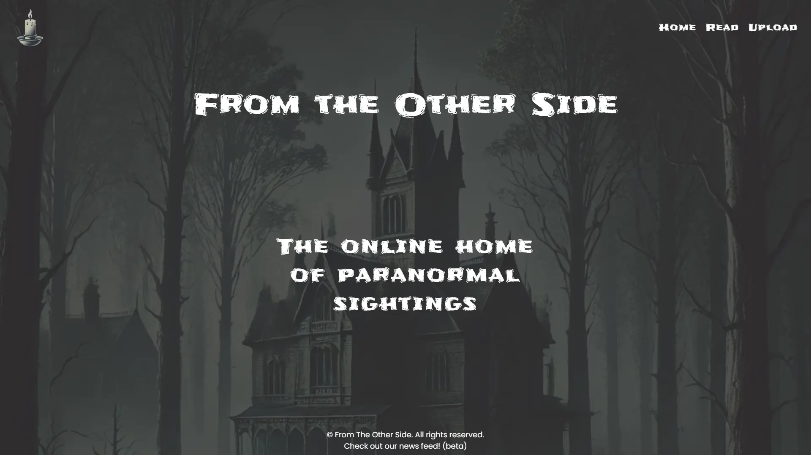

Project Overview
From the Other Side is a full-stack web application built using the native Node.js HTTP module without any backend frameworks. It allows users to submit and explore paranormal experiences while receiving live story updates via Server-Sent Events (SSE).
The frontend is served as static assets from the same Node server, ensuring a same-origin deployment with no CORS complexity. The backend follows a layered and event-driven architecture, using file-based JSON storage and Node’s EventEmitter for decoupled logic.
- 👻 Share and explore ghost sightings
- 🔁 Real-time news updates using Server-Sent Events (SSE)
- 🧠 Event-driven backend architecture
- 📦 File-based persistence using JSON
- 🧼 Input sanitization for security
- 🌐 Same-origin full-stack deployment
Tools & Technologies Used
Node.js (HTTP)
JavaScript (ES Modules)
Server-Sent Events
HTML
CSS
EventEmitter
File-based Storage
Sanitize-html
Git & GitHub
Render Deployment